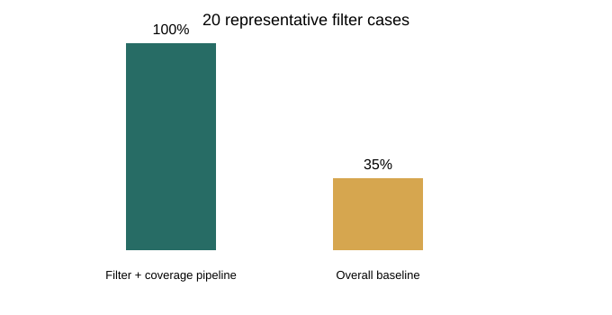

Explore the CDC data
Choose your filters, view the bar graph, then read the AI summary below it.
If the explorer does not load in this page, open it in a new tab.
Try a comparison
- Choose an indicator such as depression among adults.
- Select a demographic factor and one or more groups, then choose North Carolina and comparison locations.
- Adjust the year range and read the chart and summary.
The app compares reported values; it does not diagnose people or explain what caused a change.
Why this tool
CDC chronic disease indicators vary by year, location, and population. This project makes those slices easier to inspect and highlights missing observations so users can avoid treating a gap as zero.
Public health and healthcare professionals, students, and people exploring population-level trends.
Spot patterns or gaps that may warrant follow-up research, outreach, or resource planning.
CDC U.S. Chronic Disease Indicators, mental health topic subset supplied for this project.
How the system works
Interactive filters retrieve the relevant CDC rows. A data check groups observations by year, reports missing years, and fits a simple linear regression trend. Plotly displays the values; the Render API runs a smolagents workflow and returns a grounded summary. The API key stays in Render.
Workflow: User filters → CDC subset → grouped values and coverage → regression trend → bar graph → smolagents tool → grounded summary.
The regression is descriptive, not a forecast. Estimates may be missing, revised, or not comparable across measures or populations.
Benchmark
In the explorer, select filters and score the AI summary against 20 questions about those selections and the returned CDC evidence. The benchmark reuses the existing graph-and-summary API request; it does not send extra prompts or change the Render API. A filters-only baseline can answer the nine selection checks but has no CDC retrieval for the remaining eleven.
A separate offline check compares 20 fixed filter cases with direct calculations from the bundled CDC snapshot. It tests deterministic retrieval and coverage, not AI summary quality.

Walkthrough
Add a short screen recording showing the user problem, a filter selection, the location comparison, and the summary.
Run it
Install dependencies with pip install -r requirements.txt, then run streamlit run app.py. The hosted app uses the Render API for its smolagents summary. See README for setup, data documentation, and limitations.